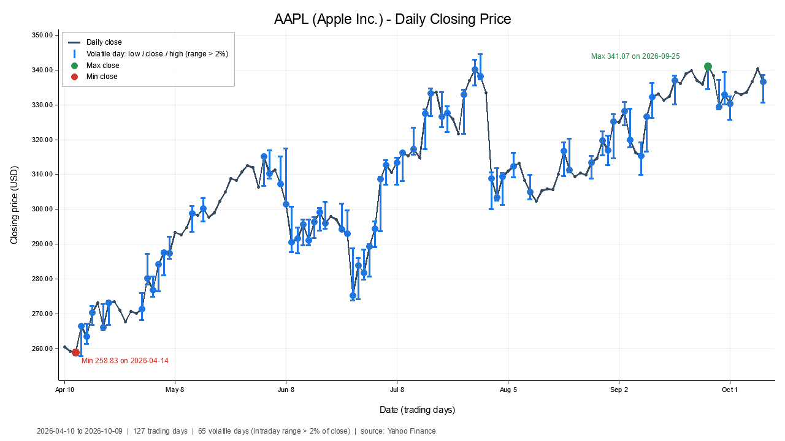

ECE 522 · Software Construction, Verification and Evolution
Project 1: line-by-line code walkthrough with references to The Rust Programming Language

| Language | Rust, edition 2024 |
| Source | 8 files: Cargo.toml, main.rs, lib.rs, error.rs, cli.rs, quotes.rs, analysis.rs, chart.rs |
| External crates | yahoo_finance_api (data), plotters (chart) |
| Tests | 16 unit tests, none need the network |
| Reference | All concept links point to doc.rust-lang.org/book |
Each source file is split into short excerpts. Every excerpt shows the exact code with its real line numbers, followed by a table with one row per line or small group of lines. The right-hand column links to the Rust Book section that teaches the concept used on that line.
A few lines call ordinary methods from the Rust standard library or from the two crates (for example f64::total_cmp or plotters' ErrorBar). The Book teaches the pattern these follow (iterator adaptors, closures, traits) but not every individual method, so those rows say so explicitly.
The program takes one ticker on the command line and runs five steps in order. Each step returns a Result. If any step fails, the ? operator stops the run and hands the error back to main, which prints it. Nothing panics on bad input.
cli.rsquotes.rsanalysis.rschart.rslib.rsAny failure along the way becomes a MonitorError (defined in error.rs) and travels back up to main.rs.
Chapter 12 of the Book builds a command-line tool called minigrep and recommends a specific shape for binary projects (Book 12.3):
main.rs tiny. It only parses arguments, calls run, and handles the error.lib.rs so it can be tested.Config struct through a constructor that returns Result instead of panicking.This project follows that shape exactly, then splits lib.rs into one module per responsibility as described in Book 7.5.
| Assignment requirement | Where it is met |
|---|---|
| Written in Rust, functional style where appropriate | Iterator chains in analysis.rs:47–56, chart.rs:53–64, quotes.rs:41–57, lib.rs:77–90 |
Read ticker from the command line, support --help | cli.rs:50–89; help text at cli.rs:12–31 |
| Get quotes (Yahoo Finance) | quotes.rs:27–69 |
| Must not crash on a bad symbol | Validation cli.rs:113–123; error mapping quotes.rs:81–93; empty data check quotes.rs:59–61 |
| Generate an image file (plotters) | chart.rs:79 (BitMapBackend to PNG) |
| Title, axis labels, correct scaling | Title chart.rs:73–76, axis labels :102–103, autoscaling :53–66 |
| Highlight volatile days (range > 2%) | Rule analysis.rs:14–20; error bars chart.rs:129–150 |
| Print min and max close with dates | analysis.rs:47–51; printed in lib.rs:57–64 |
Cargo reads this file to learn the package name, the Rust edition and which crates to download. See Book 1.3 and Book 2.
| 1 | [package] |
| 2 | name = "stock_monitor" |
| 3 | version = "0.1.0" |
| 4 | edition = "2024" |
| 5 | description = "ECE 522 Project 1: plots six months of daily closing prices and flags volatile days" |
| 6 | |
| 7 | [dependencies] |
| 8 | # Yahoo Finance client. The `blocking` feature gives a plain synchronous API, |
| 9 | # so the program does not need an async runtime such as tokio. |
| 10 | yahoo_finance_api = { version = "5", features = ["blocking"] } |
| 11 | # Chart rendering to a PNG file. |
| 12 | plotters = "0.3" |
| Line(s) | What it does and why | Rust Book |
|---|---|---|
| 1 | [package] starts the section that describes this crate. | Book 1.3 |
| 2 | The crate name. It becomes the binary name (stock_monitor.exe) and the library name used in main.rs (use stock_monitor::...). It is snake_case because Rust expects crate names in that style. | Book 1.3 Book 7.1 |
| 3 | Semantic version of our crate. | Book 1.3 |
| 4 | Edition 2024 picks the newest set of language rules. Editions let Rust change syntax without breaking older code. | Book App. E |
| 5 | A one-line description of the crate. | Book 1.3 |
| 7 | [dependencies] lists crates to fetch from crates.io, the same way the Guessing Game adds rand. | Book 2 |
| 8–9, 11 | TOML comments explaining each dependency. | Book 1.3 |
| 10 | yahoo_finance_api version 5. The features = ["blocking"] switch turns on its synchronous API, so we call plain functions instead of async ones. That is why the project needs no tokio runtime and no async/await. | Book 2 |
| 12 | plotters 0.3 draws the chart. "0.3" means any compatible 0.3.x release. The exact versions used are pinned in Cargo.lock. | Book 2 Book 2 |
The binary crate. It contains no logic of its own: it turns the command line into a Command, then either prints help, reports an argument error, or calls the library's run. This is the exact split the Book recommends in Book 12.3.
| 1 | use std::env; |
| 2 | use std::process; |
| 3 | |
| 4 | use stock_monitor::cli::{Command, Config, HELP}; |
| 5 | |
| 6 | fn main() { |
| 7 | let config = match Config::build(env::args()) { |
| 8 | Ok(Command::Monitor(config)) => config, |
| 9 | Ok(Command::ShowHelp) => { |
| 10 | print!("{HELP}"); |
| 11 | return; |
| 12 | } |
| 13 | Err(err) => { |
| 14 | eprintln!("error: {err}"); |
| 15 | process::exit(2); |
| 16 | } |
| 17 | }; |
| 18 | |
| 19 | if let Err(err) = stock_monitor::run(&config) { |
| 20 | eprintln!("error: {err}"); |
| 21 | process::exit(1); |
| 22 | } |
| 23 | } |
| Line(s) | What it does and why | Rust Book |
|---|---|---|
| 1–2 | Bring the standard library modules std::env (for args()) and std::process (for exit) into scope. The Book imports the parent module rather than the function itself, so calls read env::args(), making it clear where the function comes from. | Book 7.4 Book 12.1 |
| 4 | Import three public items from our own library crate. A package can contain both a library (src/lib.rs) and a binary (src/main.rs); the binary uses the library like any external crate, by its name stock_monitor. | Book 7.1 Book 7.4 |
| 6 | fn main() is where the program starts. It returns nothing; failures are reported via exit codes instead. | Book 3.3 |
| 7 | env::args() returns an iterator over the command-line arguments. It is passed directly into Config::build instead of first collecting into a Vec. This is the improved version from chapter 13. The result is matched immediately. | Book 12.1 Book 13.3 Book 6.2 |
| 8 | Success case: the user asked to monitor a stock. The pattern Ok(Command::Monitor(config)) looks inside two layers at once (the Result and our Command enum) and binds the inner value to config, which becomes the value of the whole match. | Book 6.2 Book 19.3 |
| 9–12 | The user asked for --help. Print the help text and return early, which ends the program with exit code 0. {HELP} is an inline format argument: the constant is captured by name inside the braces. | Book 6.2 Book 2 |
| 13–16 | The arguments were invalid. eprintln! writes to standard error instead of standard output, so error messages are not mixed into normal output. process::exit(2) stops immediately with a non-zero code so scripts can detect the failure (2 is the usual code for usage errors). | Book 12.6 Book 12.3 |
| 17 | The semicolon ends the let config = match ...; statement. Every arm either produced a Config or left the function, so the compiler knows config is always initialised here. | Book 6.2 |
| 19–22 | Run the program. if let Err(err) = ... handles only the failure case and ignores Ok(()), because there is nothing to do on success. This is word-for-word the pattern from the minigrep chapter. Runtime failures (bad ticker, no network, cannot save PNG) exit with code 1. | Book 6.3 Book 12.3 Book 12.6 |
The root of the library crate. It declares the modules, defines run (the five-step pipeline) and builds the text report.
| 1 | //! Stock Market Monitor (ECE 522, Project 1). |
| 2 | //! |
| 3 | //! The program flow is: parse arguments (`cli`) -> download prices |
| 4 | //! (`quotes`) -> analyse them (`analysis`) -> draw the chart (`chart`) -> |
| 5 | //! print a short report. Each step returns a `Result`, so a bad symbol or a |
| 6 | //! network failure ends the run with a message instead of a crash. |
| 7 | |
| 8 | pub mod analysis; |
| 9 | pub mod chart; |
| 10 | pub mod cli; |
| 11 | pub mod error; |
| 12 | pub mod quotes; |
| 13 | |
| 14 | use analysis::Summary; |
| 15 | use cli::Config; |
| 16 | use error::MonitorError; |
| 17 | use quotes::PriceHistory; |
| Line(s) | What it does and why | Rust Book |
|---|---|---|
| 1–6 | //! is an inner documentation comment. It documents the item it is inside of (here the whole crate) and appears on the front page of cargo doc output. It describes the pipeline and the no-crash design. | Book 14.2 Book 3.4 |
| 8–12 | pub mod analysis; and the others tell the compiler to load each module from the file with the same name (src/analysis.rs, ...). pub makes each module visible from main.rs and from tests. Without these lines the other files would not be compiled at all. | Book 7.5 Book 7.2 |
| 14–17 | Shorten paths so later code can write Config instead of cli::Config. Types are brought in by their full name, which the Book calls the idiomatic style for structs and enums. | Book 7.4 Book 7.3 |
| 19 | pub fn run(config: &Config) -> Result<(), MonitorError> { |
| 20 | println!( |
| 21 | "Fetching six months of daily quotes for {} ...", |
| 22 | config.symbol |
| 23 | ); |
| 24 | let history = quotes::fetch_six_months(&config.symbol)?; |
| 25 | |
| 26 | let summary = analysis::summarize(&history.bars, config.threshold_pct) |
| 27 | .ok_or_else(|| MonitorError::UnknownSymbol(config.symbol.clone()))?; |
| 28 | |
| 29 | chart::draw(&history, &summary, config.threshold_pct, &config.output)?; |
| 30 | |
| 31 | print!("{}", report(&history, &summary, config)); |
| 32 | Ok(()) |
| 33 | } |
| Line(s) | What it does and why | Rust Book |
|---|---|---|
| 19 | pub fn run borrows the configuration (&Config) because it only reads it. The return type Result<(), MonitorError> means either nothing useful ((), the unit type) on success, or our error type. | Book 4.2 Book 9.2 Book 3.2 |
| 20–23 | Prints a progress line so the user knows the network request has started. {} is a placeholder filled by config.symbol. | Book 2 |
| 24 | Step 2 (fetch). Download the prices. The trailing ? is the key to the no-crash design: if fetch_six_months returns Err, run returns that same error immediately. If it returns Ok, the value inside is unwrapped into history. | Book 9.2 |
| 26–27 | Step 3 (analyse). summarize returns an Option (None only for an empty list). ok_or_else converts it into a Result by supplying an error for the None case. The || closure makes the error only when it is needed. Then ? propagates it. &history.bars lends the vector without giving away ownership. | Book 6.1 Book 13.1 Book 9.2 Book 4.2 |
| 29 | Step 4 (draw). Draw and save the PNG. All arguments are borrowed. ? again forwards any drawing error. | Book 9.2 Book 4.2 |
| 31 | Step 5 (report). Build the report string and print it. print! is used instead of println! because the string already ends with a newline. | Book 2 |
| 32 | Every step succeeded, so return Ok(()). It is the final expression without a semicolon, so it is the function's return value. | Book 3.3 Book 9.2 |
| 35 | /// The text printed after a successful run. |
| 36 | fn report(history: &PriceHistory, summary: &Summary, config: &Config) -> String { |
| 37 | let currency = history.currency.as_deref().unwrap_or(""); |
| 38 | let first = &history.bars[0]; |
| 39 | let last = &history.bars[history.bars.len() - 1]; |
| 40 | |
| 41 | let mut out = String::new(); |
| 42 | out += &format!( |
| 43 | "\n{}{}\n", |
| 44 | history.symbol, |
| 45 | history |
| 46 | .name |
| 47 | .as_deref() |
| 48 | .map(|n| format!(" - {n}")) |
| 49 | .unwrap_or_default() |
| 50 | ); |
| 51 | out += &format!( |
| 52 | "Period: {} to {} ({} trading days)\n\n", |
| 53 | first.date, |
| 54 | last.date, |
| 55 | history.bars.len() |
| 56 | ); |
| 57 | out += &format!( |
| 58 | " Minimum close: {:>10.2} {currency} on {}\n", |
| 59 | summary.min_close.close, summary.min_close.date |
| 60 | ); |
| 61 | out += &format!( |
| 62 | " Maximum close: {:>10.2} {currency} on {}\n", |
| 63 | summary.max_close.close, summary.max_close.date |
| 64 | ); |
| 65 | out += &format!( |
| 66 | " Change over period: {:+.2}%\n\n", |
| 67 | summary.period_change_pct() |
| 68 | ); |
| 69 | |
| 70 | out += &format!( |
| 71 | "Volatile days (high - low > {}% of close): {}\n", |
| 72 | config.threshold_pct, |
| 73 | summary.volatile.len() |
| 74 | ); |
| 75 | if !summary.volatile.is_empty() { |
| 76 | out += " Date Low High Close Range\n"; |
| 77 | out += &summary |
| 78 | .volatile |
| 79 | .iter() |
| 80 | .map(|b| { |
| 81 | format!( |
| 82 | " {} {:>9.2} {:>9.2} {:>9.2} {:>6.2}%\n", |
| 83 | b.date, |
| 84 | b.low, |
| 85 | b.high, |
| 86 | b.close, |
| 87 | analysis::range_pct(b) |
| 88 | ) |
| 89 | }) |
| 90 | .collect::<String>(); |
| 91 | } |
| 92 | |
| 93 | out += &format!("\nChart saved to {}\n", config.output.display()); |
| 94 | out |
| 95 | } |
| Line(s) | What it does and why | Rust Book |
|---|---|---|
| 35 | /// is an outer doc comment that documents the item below it. | Book 14.2 |
| 36 | A private function (no pub), only visible inside this module. It takes three shared references and returns an owned String. | Book 7.2 Book 4.1 Book 8.2 |
| 37 | history.currency is an Option<String>. as_deref() turns it into an Option<&str> that borrows the text. unwrap_or("") supplies an empty string when Yahoo did not report a currency. This unwrap_or is safe: unlike unwrap() it can never panic. | Book 6.1 Book 4.3 |
| 38–39 | References to the first and last bars. Indexing would panic on an empty vector, but quotes.rs:59–61 already guarantees there is at least one bar. The Book discusses this kind of reasoning: panicking code is acceptable when you can prove the case cannot happen. | Book 8.1 Book 9.3 |
| 41 | An empty, growable String. It is mut because we append to it. | Book 8.2 Book 3.1 |
| 42–50 | out += &format!(...) appends formatted text. format! works like println! but returns a String. += on a String needs a &str, hence the &. The company name is optional: .map(...) turns Some(name) into Some(" - name"), and unwrap_or_default() turns None into an empty string. | Book 8.2 Book 6.1 Book 13.1 Book 20.5 |
| 51–56 | Period line: first date, last date and number of trading days. Dates print as YYYY-MM-DD because the Date type implements the Display trait. | Book 8.2 Book 10.2 |
| 57–64 | The two required outputs: minimum and maximum close with their dates. Format spec {:>10.2} means right-aligned in 10 characters with 2 decimal places, so the numbers line up. {currency} captures the local variable by name. | Book 2 Book 8.2 |
| 65–68 | Change over the six months. {:+.2} always prints a sign (+29.24 or -3.10). period_change_pct() is a method on Summary, defined in analysis.rs. | Book 5.3 |
| 70–74 | Heading for the volatile-days table, showing the threshold in use and how many days crossed it. | Book 2 |
| 75–76 | Only print the table header if there is at least one volatile day. ! negates the boolean. | Book 3.5 |
| 77–90 | Functional style. Instead of a for loop that pushes lines, the volatile days are turned into one String by an iterator chain: .iter() borrows each element, .map(|b| format!(...)) turns each day into one table row, and .collect::<String>() concatenates all rows. The ::<String> "turbofish" tells collect which collection to build. | Book 13.2 Book 13.1 Book 13.4 |
| 93 | Tell the user where the chart is. .display() is needed because file paths are not guaranteed to be valid UTF-8, so PathBuf does not implement Display directly. | Book 8.2 |
| 94 | Return the finished string (tail expression, no return keyword needed). Ownership of out moves to the caller. | Book 3.3 Book 4.1 |
Chapter 9 explains that recoverable failures should be returned as Result<T, E>. This file defines the E for every function in the project. Because there is a single error type, the ? operator works everywhere, and main is the only place that decides how errors look to the user.
| 1 | //! One error type for the whole program. |
| 2 | //! |
| 3 | //! Every failure (bad arguments, unknown ticker, network trouble, drawing |
| 4 | //! problems) is turned into a `MonitorError` and bubbled up with `?`, so |
| 5 | //! `main` is the only place that decides how to report it. Nothing panics. |
| 6 | |
| 7 | use std::error::Error; |
| 8 | use std::fmt; |
| 9 | |
| 10 | #[derive(Debug)] |
| 11 | pub enum MonitorError { |
| 12 | /// The command line could not be understood. |
| 13 | Usage(String), |
| 14 | /// Yahoo Finance has no usable data for this ticker. |
| 15 | UnknownSymbol(String), |
| 16 | /// The request to Yahoo Finance failed for some other reason. |
| 17 | Fetch(String), |
| 18 | /// The chart could not be drawn or saved. |
| 19 | Chart(String), |
| 20 | } |
| Line(s) | What it does and why | Rust Book |
|---|---|---|
| 1–5 | Module-level documentation explaining the purpose of the type. | Book 14.2 |
| 7–8 | Import the Error trait and the fmt module, both needed below. | Book 7.4 |
| 10 | #[derive(Debug)] asks the compiler to generate a Debug implementation, so the value can be printed with {:?} (used by tests and required by the Error trait). | Book 5.2 Book App. C |
| 11 | An enum lists every kind of failure. Each variant holds a String with details. An enum (rather than plain strings) lets the code and the tests check which kind of error happened with match/matches!. | Book 6.1 |
| 12–19 | Four variants: Usage (bad command line, exit code 2), UnknownSymbol (ticker has no data), Fetch (network or server failure), Chart (drawing or saving failed). Each has a /// doc comment. | Book 6.1 Book 14.2 |
| 22 | impl fmt::Display for MonitorError { |
| 23 | fn fmt(&self, f: &mut fmt::Formatter<'_>) -> fmt::Result { |
| 24 | match self { |
| 25 | MonitorError::Usage(msg) => write!(f, "{msg}\nTry `stock_monitor --help` for usage."), |
| 26 | MonitorError::UnknownSymbol(symbol) => write!( |
| 27 | f, |
| 28 | "no price data found for \"{symbol}\". Check that the ticker symbol is correct." |
| 29 | ), |
| 30 | MonitorError::Fetch(msg) => write!(f, "could not download quotes: {msg}"), |
| 31 | MonitorError::Chart(msg) => write!(f, "could not draw the chart: {msg}"), |
| 32 | } |
| 33 | } |
| 34 | } |
| 35 | |
| 36 | impl Error for MonitorError {} |
| Line(s) | What it does and why | Rust Book |
|---|---|---|
| 22 | Implement the standard Display trait for our type. This is what makes {err} in main.rs print a friendly sentence. | Book 10.2 |
| 23 | The one method Display requires. &self borrows the error. Formatter<'_> uses the anonymous lifetime '_: the formatter borrows something, and the compiler works out for how long. | Book 10.2 Book 5.3 Book 10.3 |
| 24 | match self picks the message for each variant. The compiler checks that all four are covered (matches are exhaustive). | Book 6.2 |
| 25 | MonitorError::Usage(msg) binds the inner String to msg. write! formats into the formatter f. Usage errors also suggest --help. | Book 6.2 Book 20.5 |
| 26–29 | Unknown ticker message. \" escapes a double quote inside a string literal. | Book 6.2 Book 8.2 |
| 30–31 | Messages for network and chart failures, which include the underlying detail. | Book 6.2 |
| 36 | impl Error for MonitorError {} marks the type as a standard error. The trait's methods all have default implementations, so the body is empty. Requirements: the type must implement Debug and Display, which lines 10 and 22 provide. | Book 10.2 Book 18.2 |
The assignment allows parsing without clap as long as --help works. This module is a direct extension of the minigrep Config::build from Book 13.3. It loops over the argument iterator, recognises options, validates the ticker and returns a Result.
| 1 | //! Command-line parsing without extra crates. |
| 2 | //! |
| 3 | //! `Config::build` takes any iterator of `String`s (normally |
| 4 | //! `std::env::args()`), which keeps it easy to unit test. |
| 5 | |
| 6 | use crate::error::MonitorError; |
| 7 | use std::path::PathBuf; |
| 8 | |
| 9 | /// Default volatility threshold: 2% of the closing price. |
| 10 | pub const DEFAULT_THRESHOLD_PCT: f64 = 2.0; |
| 11 | |
| 12 | pub const HELP: &str = "\ |
| 13 | stock_monitor - six-month closing price chart with volatile days highlighted |
| 14 | |
| 15 | USAGE: |
| 16 | stock_monitor <SYMBOL> [OPTIONS] |
| 17 | |
| 18 | ARGS: |
| 19 | <SYMBOL> Stock ticker symbol, e.g. AAPL, MSFT, SHOP.TO, ^GSPC |
| 20 | |
| 21 | OPTIONS: |
| 22 | -o, --output <FILE> Where to save the chart PNG |
| 23 | [default: output/<SYMBOL>_6mo.png] |
| 24 | -t, --threshold <PERCENT> Intraday range (high - low) as a percent of the |
| 25 | close above which a day counts as volatile |
| 26 | [default: 2] |
| 27 | -h, --help Print this help and exit |
| 28 | |
| 29 | EXAMPLE: |
| 30 | cargo run --release -- AAPL |
| 31 | "; |
| Line(s) | What it does and why | Rust Book |
|---|---|---|
| 1–4 | Module docs. They note that Config::build accepts any iterator of strings. That is what lets the tests feed in fake command lines. | Book 14.2 |
| 6 | crate:: starts an absolute path from the root of our own crate. | Book 7.3 |
| 7 | PathBuf is the owned, growable file-path type (like String, but for paths). | Book 7.4 |
| 10 | A const: a value fixed at compile time. Constants must have an explicit type annotation (f64) and use UPPER_SNAKE_CASE. pub lets the tests and other modules read it. | Book 3.1 Book 3.2 |
| 12–31 | The full --help text as a &str constant (a string slice stored in the program binary). The backslash right after the opening quote on line 12 skips the first newline, so the text starts cleanly at line 13. Everything up to the closing quote on line 31 is included, line breaks and all. | Book 3.1 Book 4.3 Book 8.2 |
| 33 | /// What the user asked the program to do. |
| 34 | #[derive(Debug, PartialEq)] |
| 35 | pub enum Command { |
| 36 | ShowHelp, |
| 37 | Monitor(Config), |
| 38 | } |
| 39 | |
| 40 | /// Settings for one monitoring run. |
| 41 | #[derive(Debug, PartialEq)] |
| 42 | pub struct Config { |
| 43 | pub symbol: String, |
| 44 | pub output: PathBuf, |
| 45 | pub threshold_pct: f64, |
| 46 | } |
| Line(s) | What it does and why | Rust Book |
|---|---|---|
| 33–38 | Command is what the user asked for: either show help, or monitor a stock. Monitor(Config) is a variant that carries data. Using an enum means main must handle both cases; the compiler enforces it. | Book 6.1 |
| 34, 41 | Debug allows printing with {:?}. PartialEq allows comparing with ==, which assert_eq! in the tests requires. | Book 5.2 Book App. C Book 11.1 |
| 42–46 | Config groups the three settings of a run. Grouping related values into a struct, instead of passing loose variables around, is the refactor the Book makes in minigrep. Fields are pub so other modules can read them. | Book 5.1 Book 12.3 |
| 43 | symbol: String, an owned upper-case ticker such as "AAPL". | Book 8.2 Book 4.1 |
| 44 | output: PathBuf, where to write the PNG. | Book 5.1 |
| 45 | threshold_pct: f64, the volatility threshold in percent (default 2.0). | Book 3.2 |
| 48 | impl Config { |
| 49 | /// Parse the arguments. The first item is the program name and is skipped. |
| 50 | pub fn build(mut args: impl Iterator<Item = String>) -> Result<Command, MonitorError> { |
| 51 | args.next(); |
| 52 | |
| 53 | let mut symbol: Option<String> = None; |
| 54 | let mut output: Option<PathBuf> = None; |
| 55 | let mut threshold_pct = DEFAULT_THRESHOLD_PCT; |
| 56 | |
| 57 | while let Some(arg) = args.next() { |
| 58 | match arg.as_str() { |
| 59 | "-h" | "--help" => return Ok(Command::ShowHelp), |
| 60 | "-o" | "--output" => { |
| 61 | let value = next_value(&mut args, &arg)?; |
| 62 | output = Some(PathBuf::from(value)); |
| 63 | } |
| 64 | "-t" | "--threshold" => { |
| 65 | let value = next_value(&mut args, &arg)?; |
| 66 | threshold_pct = parse_threshold(&value)?; |
| 67 | } |
| 68 | flag if flag.starts_with('-') && flag.len() > 1 => { |
| 69 | return Err(MonitorError::Usage(format!("unknown option `{flag}`"))); |
| 70 | } |
| 71 | _ if symbol.is_some() => { |
| 72 | return Err(MonitorError::Usage(format!( |
| 73 | "unexpected extra argument `{arg}` (only one symbol is allowed)" |
| 74 | ))); |
| 75 | } |
| 76 | _ => symbol = Some(normalize_symbol(&arg)?), |
| 77 | } |
| 78 | } |
| 79 | |
| 80 | let symbol = |
| 81 | symbol.ok_or_else(|| MonitorError::Usage("missing stock symbol".to_string()))?; |
| 82 | let output = output.unwrap_or_else(|| default_output(&symbol)); |
| 83 | |
| 84 | Ok(Command::Monitor(Config { |
| 85 | symbol, |
| 86 | output, |
| 87 | threshold_pct, |
| 88 | })) |
| 89 | } |
| 90 | } |
| Line(s) | What it does and why | Rust Book |
|---|---|---|
| 48 | impl Config opens a block of functions associated with Config. | Book 5.3 |
| 50 | An associated function (no self), called as Config::build(...). The parameter type impl Iterator<Item = String> accepts any iterator that yields Strings: the real env::args() or a test's fake list. The book names it build rather than new because new is expected never to fail. mut is needed because calling next() advances the iterator. | Book 13.3 Book 10.2 Book 5.3 |
| 51 | The first argument is always the program's own name. Calling next() once discards it, exactly as in the Book. | Book 13.3 Book 12.1 |
| 53–55 | Parser state. symbol and output start as None because they have not been seen yet. The threshold starts at its default. All three are mut because the loop fills them in. | Book 6.1 Book 3.1 |
| 57 | while let Some(arg) = args.next() keeps looping as long as the iterator yields another argument and stops when it returns None. A while loop is used here (rather than for) because some options need to pull an extra item, their value, from the same iterator inside the loop body. | Book 19.1 Book 3.5 |
| 58 | arg.as_str() turns the String into a &str so it can be matched against string literals. | Book 6.2 Book 8.2 |
| 59 | Two patterns joined with |: either spelling means help. Help is returned immediately, even if other arguments are wrong. | Book 19.3 |
| 60–63 | Output option. next_value pulls the next argument (the file name). Its ? returns a usage error if the value is missing. The value is stored as Some(PathBuf). | Book 19.3 Book 9.2 |
| 64–67 | Threshold option. Same idea, then parse_threshold checks that the text is a sensible number. | Book 19.3 Book 9.2 |
| 68–70 | A match guard. flag if flag.starts_with('-') && flag.len() > 1 matches any other argument that looks like an option, binds it to flag and reports it as unknown. len() > 1 keeps a lone - from being treated as an option. | Book 19.3 |
| 71–75 | _ matches anything. The guard if symbol.is_some() means a symbol was already given, so a second one is an error. | Book 19.3 Book 19.3 |
| 76 | Otherwise this argument is the ticker. normalize_symbol upper-cases and validates it, ? forwards a validation error, and the result is stored in symbol. | Book 6.2 Book 9.2 |
| 80–81 | After the loop: if no symbol was given, ok_or_else turns None into a usage error and ? returns it. Otherwise symbol is shadowed by a new variable of type String (not Option). | Book 6.1 Book 3.1 Book 9.2 |
| 82 | If --output was not given, compute the default path. unwrap_or_else only calls the closure when needed. The closure borrows symbol. | Book 13.1 |
| 84–88 | Build the Config using field init shorthand: writing symbol instead of symbol: symbol because the variable and field names match. Wrap it in Command::Monitor and Ok. | Book 5.1 |
| 92 | fn next_value(args: &mut impl Iterator<Item = String>, flag: &str) -> Result<String, MonitorError> { |
| 93 | args.next() |
| 94 | .ok_or_else(|| MonitorError::Usage(format!("`{flag}` needs a value"))) |
| 95 | } |
| 96 | |
| 97 | fn parse_threshold(value: &str) -> Result<f64, MonitorError> { |
| 98 | value |
| 99 | .trim_end_matches('%') |
| 100 | .parse::<f64>() |
| 101 | .ok() |
| 102 | .filter(|pct| pct.is_finite() && *pct > 0.0 && *pct < 100.0) |
| 103 | .ok_or_else(|| { |
| 104 | MonitorError::Usage(format!( |
| 105 | "threshold must be a number between 0 and 100, got `{value}`" |
| 106 | )) |
| 107 | }) |
| 108 | } |
| 109 | |
| 110 | /// Upper-case the ticker and reject characters that never appear in a |
| 111 | /// Yahoo symbol. This also stops odd input from being pasted into the URL |
| 112 | /// or the output file name. |
| 113 | fn normalize_symbol(raw: &str) -> Result<String, MonitorError> { |
| 114 | let symbol = raw.trim().to_uppercase(); |
| 115 | let allowed = |c: char| c.is_ascii_alphanumeric() || matches!(c, '.' | '-' | '^' | '='); |
| 116 | |
| 117 | if symbol.is_empty() || symbol.len() > 15 || !symbol.chars().all(allowed) { |
| 118 | return Err(MonitorError::Usage(format!( |
| 119 | "`{raw}` is not a valid ticker symbol" |
| 120 | ))); |
| 121 | } |
| 122 | Ok(symbol) |
| 123 | } |
| 124 | |
| 125 | fn default_output(symbol: &str) -> PathBuf { |
| 126 | // `^GSPC` and similar index tickers would give awkward file names. |
| 127 | let file_stem: String = symbol |
| 128 | .chars() |
| 129 | .map(|c| { |
| 130 | if c.is_ascii_alphanumeric() || c == '-' { |
| 131 | c |
| 132 | } else { |
| 133 | '_' |
| 134 | } |
| 135 | }) |
| 136 | .collect(); |
| 137 | PathBuf::from("output").join(format!("{file_stem}_6mo.png")) |
| 138 | } |
| Line(s) | What it does and why | Rust Book |
|---|---|---|
| 92 | next_value takes &mut, a mutable borrow of the iterator, because pulling an item changes it. The flag name is only used for the error message. | Book 4.2 Book 10.2 |
| 93–94 | args.next() is an Option<String>. ok_or_else converts None into a usage error such as `-t` needs a value. There is no semicolon, so this expression is the return value. | Book 6.1 Book 13.1 |
| 97–108 | parse_threshold is written as one functional chain:• trim_end_matches('%') lets the user type 3% or 3.• parse::<f64>() converts the text to a number and returns a Result, just like parsing the guess in the Guessing Game.• .ok() turns that Result into an Option.• .filter(...) keeps the value only if it is finite and strictly between 0 and 100.• ok_or_else gives one clear error for every way it can fail.So abc, -4, 0 and NaN are all rejected without a crash. | Book 2 Book 9.2 Book 13.1 Book 6.1 |
| 110–113 | normalize_symbol cleans and validates the ticker. The doc comment explains a second purpose: the symbol later goes into a URL and a file name, so only safe characters are allowed. | Book 14.2 |
| 114 | trim() removes surrounding spaces and to_uppercase() gives a new String, so aapl works. | Book 8.2 |
| 115 | A closure stored in a variable. matches!(c, '.' | '-' | '^' | '=') is a standard macro that returns true if c matches the pattern. These four characters appear in real tickers: SHOP.TO, BTC-USD, ^GSPC, EURUSD=X. | Book 13.1 Book 19.3 Book 20.5 |
| 117–121 | Reject empty strings, over-long strings, or any character outside the allowed set. .chars().all(allowed) passes the closure to the all iterator method. This blocks AA$PL and ../../etc before any network call is made. | Book 13.2 Book 13.1 Book 3.5 |
| 122 | The symbol is valid, so return it wrapped in Ok. | Book 9.2 |
| 125–138 | default_output builds output/AAPL_6mo.png. Lines 127–136 map every character that is not alphanumeric or - to _ (^GSPC becomes _GSPC) and collect() the characters into a String. if/else is an expression in Rust, so it produces the character directly. PathBuf::from("output").join(...) adds the right path separator for the operating system. | Book 13.2 Book 13.1 Book 3.5 |
| 140 | #[cfg(test)] |
| 141 | mod tests { |
| 142 | use super::*; |
| 143 | |
| 144 | fn parse(line: &str) -> Result<Command, MonitorError> { |
| 145 | Config::build(line.split_whitespace().map(String::from)) |
| 146 | } |
| 147 | |
| 148 | fn config(line: &str) -> Config { |
| 149 | match parse(line) { |
| 150 | Ok(Command::Monitor(config)) => config, |
| 151 | other => panic!("expected a config, got {other:?}"), |
| 152 | } |
| 153 | } |
| 154 | |
| 155 | #[test] |
| 156 | fn symbol_only_uses_defaults() { |
| 157 | let c = config("prog aapl"); |
| 158 | assert_eq!(c.symbol, "AAPL"); |
| 159 | assert_eq!(c.output, PathBuf::from("output").join("AAPL_6mo.png")); |
| 160 | assert_eq!(c.threshold_pct, DEFAULT_THRESHOLD_PCT); |
| 161 | } |
| 162 | |
| 163 | #[test] |
| 164 | fn help_wins_even_with_other_args() { |
| 165 | assert_eq!(parse("prog --help").unwrap(), Command::ShowHelp); |
| 166 | assert_eq!(parse("prog AAPL -h").unwrap(), Command::ShowHelp); |
| 167 | } |
| 168 | |
| 169 | #[test] |
| 170 | fn options_are_read() { |
| 171 | let c = config("prog msft -t 3.5 --output chart.png"); |
| 172 | assert_eq!(c.symbol, "MSFT"); |
| 173 | assert_eq!(c.threshold_pct, 3.5); |
| 174 | assert_eq!(c.output, PathBuf::from("chart.png")); |
| 175 | } |
| 176 | |
| 177 | #[test] |
| 178 | fn threshold_accepts_percent_sign() { |
| 179 | assert_eq!(config("prog AAPL -t 1.5%").threshold_pct, 1.5); |
| 180 | } |
| 181 | |
| 182 | #[test] |
| 183 | fn index_symbol_gets_safe_file_name() { |
| 184 | let c = config("prog ^gspc"); |
| 185 | assert_eq!(c.symbol, "^GSPC"); |
| 186 | assert_eq!(c.output, PathBuf::from("output").join("_GSPC_6mo.png")); |
| 187 | } |
| 188 | |
| 189 | #[test] |
| 190 | fn bad_input_is_an_error_not_a_panic() { |
| 191 | for line in [ |
| 192 | "prog", |
| 193 | "prog AAPL MSFT", |
| 194 | "prog AAPL --frobnicate", |
| 195 | "prog AAPL -t", |
| 196 | "prog AAPL -t abc", |
| 197 | "prog AAPL -t -4", |
| 198 | "prog AAPL -t 0", |
| 199 | "prog AA$PL", |
| 200 | "prog ../../etc", |
| 201 | ] { |
| 202 | assert!( |
| 203 | matches!(parse(line), Err(MonitorError::Usage(_))), |
| 204 | "`{line}` should be rejected" |
| 205 | ); |
| 206 | } |
| 207 | } |
| 208 | } |
| Line(s) | What it does and why | Rust Book |
|---|---|---|
| 140 | #[cfg(test)] compiles this module only when running cargo test, so tests add nothing to the release binary. | Book 11.3 |
| 142 | use super::*; brings everything from the parent module into the test module, including the private functions. Rust lets unit tests reach private items this way. | Book 11.3 Book 7.3 |
| 144–146 | Helper: split a fake command line on whitespace, turn each piece into a String and pass the iterator to Config::build. This is why build takes an iterator rather than reading env::args() itself. | Book 13.3 Book 13.2 |
| 148–153 | Helper that expects success. If parsing did not produce a Config, it calls panic!, which is how a test reports failure. | Book 11.1 Book 9.1 |
| 155–161 | #[test] marks a test function. Checks that a lower-case symbol is upper-cased and that the defaults are applied. assert_eq! compares two values and shows both if they differ. | Book 11.1 |
| 163–167 | --help or -h anywhere returns ShowHelp. .unwrap() is fine in tests: a panic there means the test fails, which is what we want. | Book 11.1 Book 9.3 |
| 169–180 | Options are read correctly, including the optional % sign. | Book 11.1 |
| 182–187 | An index ticker gets a safe file name. | Book 11.1 |
| 189–207 | The most important test for the no-crash requirement. Nine bad command lines (missing symbol, two symbols, unknown option, missing or invalid threshold, illegal characters) must each return a Usage error instead of panicking. matches! checks the variant, and the second argument to assert! is a custom failure message. | Book 11.1 Book 20.5 |
This is the only module that talks to the network. It converts the crate's data into our own small types, so no other module depends on yahoo_finance_api directly (apart from its Date type).
| 1 | //! Downloading daily prices from Yahoo Finance. |
| 2 | |
| 3 | use crate::error::MonitorError; |
| 4 | use yahoo_finance_api::time::{Date, OffsetDateTime, UtcOffset}; |
| 5 | use yahoo_finance_api::{YahooConnector, YahooError}; |
| 6 | |
| 7 | /// One trading day of price data. |
| 8 | #[derive(Debug, Clone, PartialEq)] |
| 9 | pub struct DailyBar { |
| 10 | pub date: Date, |
| 11 | pub open: f64, |
| 12 | pub high: f64, |
| 13 | pub low: f64, |
| 14 | pub close: f64, |
| 15 | } |
| 16 | |
| 17 | /// Everything the rest of the program needs about the downloaded series. |
| 18 | #[derive(Debug)] |
| 19 | pub struct PriceHistory { |
| 20 | pub symbol: String, |
| 21 | pub name: Option<String>, |
| 22 | pub currency: Option<String>, |
| 23 | pub bars: Vec<DailyBar>, |
| 24 | } |
| Line(s) | What it does and why | Rust Book |
|---|---|---|
| 3 | Our error type, via an absolute crate:: path. | Book 7.3 |
| 4 | Date/time types. yahoo_finance_api re-exports the time crate, so we use it through that path and need no extra dependency. Braces import several items from one path at once. | Book 7.4 |
| 5 | YahooConnector makes the HTTP request. YahooError is the crate's own error enum, which we translate into ours. | Book 7.4 |
| 8 | Clone allows explicit copies and PartialEq allows == comparisons. | Book 5.2 Book App. C |
| 9–15 | DailyBar is one trading day: its calendar date and the four prices as f64 (64-bit floating point). Only these five fields are kept; the crate also gives volume and adjusted close, which this project does not need. | Book 5.1 Book 3.2 |
| 18–24 | PriceHistory is the full download result. name and currency are Option<String> because Yahoo does not always send them; Option forces every user of these fields to handle the missing case. bars is a Vec, a growable list. | Book 5.1 Book 6.1 Book 8.1 |
| 26 | /// Fetch the last six months of daily bars for `symbol`. |
| 27 | pub fn fetch_six_months(symbol: &str) -> Result<PriceHistory, MonitorError> { |
| 28 | let provider = YahooConnector::new().map_err(|e| MonitorError::Fetch(e.to_string()))?; |
| 29 | |
| 30 | let response = provider |
| 31 | .get_quote_range(symbol, "1d", "6mo") |
| 32 | .map_err(|e| classify(symbol, e))?; |
| 33 | |
| 34 | let meta = response.metadata().map_err(|e| classify(symbol, e))?; |
| 35 | let quotes = response.quotes().map_err(|e| classify(symbol, e))?; |
| 36 | |
| 37 | // Dates are taken in the exchange's own time zone, so a bar stamped at |
| 38 | // 09:30 New York time is not shifted to the next day in UTC. |
| 39 | let offset = UtcOffset::from_whole_seconds(meta.gmtoffset).unwrap_or(UtcOffset::UTC); |
| 40 | |
| 41 | let bars: Vec<DailyBar> = quotes |
| 42 | .iter() |
| 43 | .filter_map(|q| { |
| 44 | let date = OffsetDateTime::from_unix_timestamp(q.timestamp) |
| 45 | .ok()? |
| 46 | .to_offset(offset) |
| 47 | .date(); |
| 48 | let bar = DailyBar { |
| 49 | date, |
| 50 | open: q.open, |
| 51 | high: q.high, |
| 52 | low: q.low, |
| 53 | close: q.close, |
| 54 | }; |
| 55 | is_usable(&bar).then_some(bar) |
| 56 | }) |
| 57 | .collect(); |
| 58 | |
| 59 | if bars.is_empty() { |
| 60 | return Err(MonitorError::UnknownSymbol(symbol.to_string())); |
| 61 | } |
| 62 | |
| 63 | Ok(PriceHistory { |
| 64 | symbol: meta.symbol, |
| 65 | name: meta.long_name.or(meta.short_name), |
| 66 | currency: meta.currency, |
| 67 | bars, |
| 68 | }) |
| 69 | } |
| Line(s) | What it does and why | Rust Book |
|---|---|---|
| 27 | Takes the symbol as a borrowed &str and returns either the history or our error. | Book 4.3 Book 9.2 |
| 28 | Create the HTTP client. map_err converts the crate's error into MonitorError::Fetch, using a closure that calls to_string() (available because the error implements Display). Then ? propagates it. ? only works when the error types match, which is why the map_err is needed. | Book 9.2 Book 9.2 Book 13.1 |
| 30–32 | The actual request: daily interval ("1d") over a six-month range ("6mo"). Yahoo works out the dates, so there is no date arithmetic to get wrong. This is the blocking version enabled in Cargo.toml, so the call simply waits for the reply. Errors go through classify (below), which tells a bad ticker apart from a network failure. | Book 9.2 Book 13.1 |
| 34 | Metadata: symbol, company name, currency and the exchange's offset from UTC. | Book 9.2 |
| 35 | The list of quotes, each with a Unix timestamp and open/high/low/close. | Book 9.2 Book 8.1 |
| 37–39 | Yahoo stamps each day with the market-open time. Converting that to a date in UTC could give the wrong calendar day for exchanges far from UTC, so we use the exchange's own offset (meta.gmtoffset, in seconds). unwrap_or(UtcOffset::UTC) is a safe fallback if the offset is out of range. | Book 9.2 |
| 41–57 | Functional conversion and cleaning in one chain. filter_map combines map and filter: the closure returns Some(bar) to keep an item or None to drop it. The Vec<DailyBar> annotation on line 41 tells collect() what to build. | Book 13.2 Book 13.1 |
| 44–47 | Timestamp to date. from_unix_timestamp returns a Result; .ok()? turns it into an Option, and ? on an Option returns None from the closure early. A corrupt timestamp therefore drops that row instead of crashing. Then shift to the exchange offset and keep only the date part. | Book 9.2 Book 9.2 |
| 48–54 | Build our DailyBar. date uses field init shorthand; the prices are copied out of the crate's quote q. | Book 5.1 |
| 55 | is_usable(&bar).then_some(bar): bool::then_some gives Some(bar) when the check is true and None when false, so invalid rows are filtered out. (then_some is a standard library method, not covered by the Book.) | Book 6.1 |
| 59–61 | If nothing usable came back, treat the ticker as unknown. This check is what lets lib.rs and chart.rs safely index bars[0] later. | Book 3.5 Book 9.2 |
| 63–68 | Return the result. meta.long_name.or(meta.short_name) prefers the full company name and falls back to the short one. Fields of meta are moved into the new struct rather than copied, which is fine because meta is not used again. | Book 5.1 Book 4.1 Book 6.1 |
| 71 | /// Yahoo sometimes sends half-empty rows (for example the current day while |
| 72 | /// the market is still open). Those would distort the chart, so drop them. |
| 73 | fn is_usable(bar: &DailyBar) -> bool { |
| 74 | let prices = [bar.open, bar.high, bar.low, bar.close]; |
| 75 | prices.iter().all(|p| p.is_finite() && *p > 0.0) && bar.low <= bar.high |
| 76 | } |
| 77 | |
| 78 | /// Turn the library's error into one of ours. Yahoo answers an unknown ticker |
| 79 | /// with HTTP 404, an API error ("No data found") or an empty result, and all |
| 80 | /// of those should read as "bad symbol" rather than as a network problem. |
| 81 | fn classify(symbol: &str, err: YahooError) -> MonitorError { |
| 82 | match err { |
| 83 | YahooError::FetchFailed(msg) if msg.starts_with("404") => { |
| 84 | MonitorError::UnknownSymbol(symbol.to_string()) |
| 85 | } |
| 86 | YahooError::ApiError(_) |
| 87 | | YahooError::NoResult |
| 88 | | YahooError::NoQuotes |
| 89 | | YahooError::EmptyResponse |
| 90 | | YahooError::DataInconsistency => MonitorError::UnknownSymbol(symbol.to_string()), |
| 91 | other => MonitorError::Fetch(other.to_string()), |
| 92 | } |
| 93 | } |
| Line(s) | What it does and why | Rust Book |
|---|---|---|
| 73–76 | is_usable rejects incomplete rows. It puts the four prices into an array and checks with .iter().all(...) that each is a real number (is_finite excludes NaN and infinity) and positive. It also requires low <= high. *p dereferences the &f64 the iterator yields. | Book 3.2 Book 13.2 Book 13.1 Book 4.2 |
| 81 | classify takes ownership of the crate's error (err: YahooError, not a reference) because it consumes it to build ours. | Book 4.1 |
| 82–85 | For an unknown ticker, Yahoo replies with HTTP 404, which the crate reports as FetchFailed("404, ..."). A match guard, if msg.starts_with("404"), picks out exactly that case. This is what turns ZZZZQQ into the friendly message "no price data found". | Book 19.3 Book 6.2 |
| 86–90 | Several other variants also mean "no data for this symbol". They are combined with | in one arm. ApiError(_) uses _ to ignore the inner value. | Book 19.3 Book 19.3 |
| 91 | Anything else (timeouts, DNS failure, rate limiting) is a genuine fetch error. other binds the whole value so its message can be kept. | Book 6.2 |
| 95 | #[cfg(test)] |
| 96 | mod tests { |
| 97 | use super::*; |
| 98 | use yahoo_finance_api::time::Month; |
| 99 | |
| 100 | fn bar(open: f64, high: f64, low: f64, close: f64) -> DailyBar { |
| 101 | let date = Date::from_calendar_date(2026, Month::March, 2).unwrap(); |
| 102 | DailyBar { |
| 103 | date, |
| 104 | open, |
| 105 | high, |
| 106 | low, |
| 107 | close, |
| 108 | } |
| 109 | } |
| 110 | |
| 111 | #[test] |
| 112 | fn normal_bar_is_usable() { |
| 113 | assert!(is_usable(&bar(10.0, 11.0, 9.5, 10.5))); |
| 114 | } |
| 115 | |
| 116 | #[test] |
| 117 | fn not_found_means_unknown_symbol() { |
| 118 | let err = YahooError::FetchFailed("404, request url: ...".to_string()); |
| 119 | assert!(matches!( |
| 120 | classify("ZZZZ", err), |
| 121 | MonitorError::UnknownSymbol(_) |
| 122 | )); |
| 123 | assert!(matches!( |
| 124 | classify("ZZZZ", YahooError::NoQuotes), |
| 125 | MonitorError::UnknownSymbol(_) |
| 126 | )); |
| 127 | |
| 128 | let err = YahooError::FetchFailed("500 server trouble".to_string()); |
| 129 | assert!(matches!(classify("AAPL", err), MonitorError::Fetch(_))); |
| 130 | } |
| 131 | |
| 132 | #[test] |
| 133 | fn broken_bars_are_dropped() { |
| 134 | assert!(!is_usable(&bar(0.0, 11.0, 9.5, 10.5))); |
| 135 | assert!(!is_usable(&bar(10.0, 11.0, 9.5, f64::NAN))); |
| 136 | assert!(!is_usable(&bar(10.0, 9.0, 9.5, 10.5))); // high below low |
| 137 | } |
| 138 | } |
| Line(s) | What it does and why | Rust Book |
|---|---|---|
| 100–109 | Helper that builds a DailyBar with chosen prices. from_calendar_date returns a Result; unwrap() is acceptable here because the date is a known-valid constant and this is test code. | Book 11.1 Book 9.3 |
| 111–114 | A normal bar passes the validity check. | Book 11.1 |
| 116–130 | Error mapping: a 404 and NoQuotes become UnknownSymbol, while a 500 server error stays a Fetch error. Because classify is a plain function, it can be tested without any network access. | Book 11.1 Book 20.5 |
| 132–137 | Rows with a zero price, a NaN close, or high below low are all rejected. assert!(!...) checks that the result is false. | Book 11.1 |
This module has no input/output at all: it only takes a slice of bars and computes results. That makes it the easiest part of the project to test, and it is where the assignment's "functional programming style" requirement shows most clearly.
| 1 | //! The financial analysis: volatile days and the closing-price extremes. |
| 2 | //! |
| 3 | //! A day is *volatile* when its intraday range is large compared with the |
| 4 | //! price it closed at: |
| 5 | //! |
| 6 | //! ```text |
| 7 | //! range_pct = (high - low) / close * 100 |
| 8 | //! volatile = range_pct > threshold_pct (threshold_pct = 2 by default) |
| 9 | //! ``` |
| 10 | |
| 11 | use crate::quotes::DailyBar; |
| 12 | |
| 13 | /// Intraday high-low range as a percentage of the close. |
| 14 | pub fn range_pct(bar: &DailyBar) -> f64 { |
| 15 | (bar.high - bar.low) / bar.close * 100.0 |
| 16 | } |
| 17 | |
| 18 | pub fn is_volatile(bar: &DailyBar, threshold_pct: f64) -> bool { |
| 19 | range_pct(bar) > threshold_pct |
| 20 | } |
| Line(s) | What it does and why | Rust Book |
|---|---|---|
| 1–9 | Module docs stating the formula. The ```text fence marks the block as plain text; without it cargo test would try to compile it as a Rust doc-test. | Book 14.2 |
| 11 | The only import needed is our DailyBar type. | Book 7.4 |
| 14–16 | range_pct returns the intraday spread as a percentage of the closing price. A function body with no semicolon on its last line returns that value. | Book 3.3 Book 3.2 |
| 18–20 | is_volatile applies the rule. > is strictly greater, because the assignment says "more than 2%", so exactly 2.00% does not count. The threshold is a parameter rather than a hard-coded 2.0, so --threshold can change it. | Book 3.3 |
| 22 | /// Results of analysing one price series. |
| 23 | #[derive(Debug)] |
| 24 | pub struct Summary<'a> { |
| 25 | pub min_close: &'a DailyBar, |
| 26 | pub max_close: &'a DailyBar, |
| 27 | pub volatile: Vec<&'a DailyBar>, |
| 28 | pub first_close: f64, |
| 29 | pub last_close: f64, |
| 30 | } |
| 31 | |
| 32 | impl Summary<'_> { |
| 33 | /// Change from the first to the last close in the window, in percent. |
| 34 | pub fn period_change_pct(&self) -> f64 { |
| 35 | (self.last_close - self.first_close) / self.first_close * 100.0 |
| 36 | } |
| 37 | } |
| Line(s) | What it does and why | Rust Book |
|---|---|---|
| 23–30 | Summary<'a> holds the results. min_close, max_close and the volatile list are references into the original bars rather than copies. That is cheap, and each reference carries the date and all prices of that day. | Book 5.1 Book 4.2 |
| 24 | 'a is a lifetime parameter. A struct that holds references must declare one. It tells the compiler that a Summary cannot outlive the Vec<DailyBar> it points into, so it can never refer to freed memory. | Book 10.3 |
| 27 | Vec<&'a DailyBar> is a vector of references to the volatile days. | Book 8.1 Book 10.3 |
| 32 | impl Summary<'_>: the '_ says "some lifetime, its name does not matter here". | Book 10.3 Book 5.3 |
| 34–36 | A method (&self) computing the percentage change over the period. | Book 5.3 |
| 39 | /// Analyse the bars. Returns `None` only when there are no bars at all. |
| 40 | /// |
| 41 | /// `f64` is not `Ord` (because of NaN), so `Iterator::max` cannot be used |
| 42 | /// directly; `max_by` with `total_cmp` gives the same functional style. |
| 43 | /// When the same extreme close appears more than once, the earliest date is |
| 44 | /// reported: `min_by` keeps the first minimum, while `max_by` keeps the last |
| 45 | /// maximum, so the max search runs over the reversed iterator. |
| 46 | pub fn summarize(bars: &[DailyBar], threshold_pct: f64) -> Option<Summary<'_>> { |
| 47 | let min_close = bars.iter().min_by(|a, b| a.close.total_cmp(&b.close))?; |
| 48 | let max_close = bars |
| 49 | .iter() |
| 50 | .rev() |
| 51 | .max_by(|a, b| a.close.total_cmp(&b.close))?; |
| 52 | |
| 53 | let volatile = bars |
| 54 | .iter() |
| 55 | .filter(|bar| is_volatile(bar, threshold_pct)) |
| 56 | .collect(); |
| 57 | |
| 58 | Some(Summary { |
| 59 | min_close, |
| 60 | max_close, |
| 61 | volatile, |
| 62 | first_close: bars.first()?.close, |
| 63 | last_close: bars.last()?.close, |
| 64 | }) |
| 65 | } |
| Line(s) | What it does and why | Rust Book |
|---|---|---|
| 39–45 | Doc comment covering two subtle points: why max_by is used instead of max, and which date is reported when two days tie. | Book 14.2 |
| 46 | Takes a slice &[DailyBar], which works for a Vec or an array. Returns Option<Summary<'_>>: None if there are no bars. The '_ ties the summary's lifetime to the input slice (lifetime elision). | Book 4.3 Book 6.1 Book 10.3 |
| 47 | Minimum close. The assignment's example uses .map(|x| x.close).max(), but that does not compile for f64: floats are not Ord because NaN cannot be ordered. min_by takes a comparison closure instead, and f64::total_cmp supplies a total ordering. It returns the whole bar (so we keep its date), and ? returns None if the slice is empty. (total_cmp and min_by are standard library methods; the Book covers the general iterator-plus-closure pattern.) | Book 13.2 Book 13.1 Book 9.2 Book 10.2 |
| 48–51 | Maximum close. max_by returns the last of several equal maxima, while min_by returns the first of equal minima. Reversing the iterator with .rev() makes max_by also report the earliest date, so ties are handled consistently. | Book 13.2 Book 13.1 |
| 53–56 | Volatile days. filter keeps only bars where is_volatile is true. collect() builds the Vec<&DailyBar>; the type is inferred from the Summary field it is assigned to. This one line is the core of the analysis. | Book 13.2 Book 13.1 |
| 58–64 | Assemble the result with field init shorthand. bars.first()? and bars.last()? return Options, so no indexing panic is possible. | Book 5.1 Book 9.2 |
| 67 | #[cfg(test)] |
| 68 | mod tests { |
| 69 | use super::*; |
| 70 | use yahoo_finance_api::time::{Date, Duration, Month}; |
| 71 | |
| 72 | /// Build bars from (high, low, close) triples on consecutive days. |
| 73 | fn bars(points: &[(f64, f64, f64)]) -> Vec<DailyBar> { |
| 74 | let start = Date::from_calendar_date(2026, Month::April, 1).unwrap(); |
| 75 | points |
| 76 | .iter() |
| 77 | .enumerate() |
| 78 | .map(|(i, &(high, low, close))| DailyBar { |
| 79 | date: start + Duration::days(i as i64), |
| 80 | open: close, |
| 81 | high, |
| 82 | low, |
| 83 | close, |
| 84 | }) |
| 85 | .collect() |
| 86 | } |
| 87 | |
| 88 | #[test] |
| 89 | fn range_is_relative_to_close() { |
| 90 | let b = &bars(&[(102.0, 99.0, 100.0)])[0]; |
| 91 | assert!((range_pct(b) - 3.0).abs() < 1e-9); |
| 92 | } |
| 93 | |
| 94 | #[test] |
| 95 | fn threshold_is_strictly_greater_than() { |
| 96 | // Exactly 2% is *not* "more than 2%". |
| 97 | let b = &bars(&[(101.0, 99.0, 100.0)])[0]; |
| 98 | assert!(!is_volatile(b, 2.0)); |
| 99 | assert!(is_volatile(b, 1.99)); |
| 100 | } |
| 101 | |
| 102 | #[test] |
| 103 | fn finds_min_max_and_volatile_days() { |
| 104 | let data = bars(&[ |
| 105 | (101.0, 100.0, 100.5), // 1.0% calm |
| 106 | (110.0, 104.0, 108.0), // 5.6% volatile, max close |
| 107 | (99.0, 98.5, 98.8), // 0.5% calm, min close |
| 108 | (104.0, 100.0, 103.0), // 3.9% volatile |
| 109 | ]); |
| 110 | let s = summarize(&data, 2.0).unwrap(); |
| 111 | |
| 112 | assert_eq!(s.max_close.close, 108.0); |
| 113 | assert_eq!(s.max_close.date, data[1].date); |
| 114 | assert_eq!(s.min_close.close, 98.8); |
| 115 | assert_eq!(s.min_close.date, data[2].date); |
| 116 | |
| 117 | let volatile_dates: Vec<_> = s.volatile.iter().map(|b| b.date).collect(); |
| 118 | assert_eq!(volatile_dates, vec![data[1].date, data[3].date]); |
| 119 | |
| 120 | assert!((s.period_change_pct() - 2.4875621).abs() < 1e-6); |
| 121 | } |
| 122 | |
| 123 | #[test] |
| 124 | fn ties_report_the_earliest_day() { |
| 125 | let data = bars(&[ |
| 126 | (51.0, 49.0, 50.0), |
| 127 | (61.0, 59.0, 60.0), |
| 128 | (51.0, 49.0, 50.0), |
| 129 | (61.0, 59.0, 60.0), |
| 130 | ]); |
| 131 | let s = summarize(&data, 2.0).unwrap(); |
| 132 | assert_eq!(s.min_close.date, data[0].date); |
| 133 | assert_eq!(s.max_close.date, data[1].date); |
| 134 | } |
| 135 | |
| 136 | #[test] |
| 137 | fn empty_input_gives_none() { |
| 138 | assert!(summarize(&[], 2.0).is_none()); |
| 139 | } |
| 140 | } |
| Line(s) | What it does and why | Rust Book |
|---|---|---|
| 73–86 | Helper turning a list of (high, low, close) tuples into bars on consecutive dates. .enumerate() adds the index i, used to step the date forward. The closure parameter &(high, low, close) destructures each tuple reference into three variables. | Book 13.2 Book 19.3 |
| 88–92 | (102 − 99) / 100 = 3%. Floats are compared with a tolerance (< 1e-9) rather than ==, because floating-point arithmetic is not exact. | Book 11.1 Book 3.2 |
| 94–100 | The boundary case: exactly 2% is not volatile, and 1.99% is. | Book 11.1 |
| 102–121 | A four-day series with known answers. Checks the min and max values and their dates, which days are volatile, and the period change. | Book 11.1 |
| 123–134 | Repeated minimum and maximum values: the earliest date must be reported for both. | Book 11.1 |
| 136–139 | An empty slice gives None, not a panic. | Book 11.1 |
Uses the plotters crate. Plotters works in layers: a backend (here a PNG bitmap) becomes a drawing area, a ChartBuilder turns that into a chart with coordinates, and series of shapes are drawn onto it. The Rust patterns used here are the same as elsewhere (iterators, closures, ?). The plotters-specific calls are explained in plain terms.
| 1 | //! Drawing the chart with `plotters`. |
| 2 | //! |
| 3 | //! Layout choices: |
| 4 | //! * The x axis counts *trading days* (0, 1, 2, ...) and the tick labels are |
| 5 | //! the matching calendar dates. Weekends and holidays therefore leave no |
| 6 | //! gaps in the line. |
| 7 | //! * The closing price is a line with a small dot per day. |
| 8 | //! * Volatile days get an error bar from the intraday low to the intraday |
| 9 | //! high, with a tick at the close. |
| 10 | //! * The lowest and highest closes are marked and labelled. |
| 11 | //! * The y axis is scaled automatically to the data with a small margin. |
| 12 | |
| 13 | use crate::analysis::{Summary, is_volatile}; |
| 14 | use crate::error::MonitorError; |
| 15 | use crate::quotes::{DailyBar, PriceHistory}; |
| 16 | use plotters::prelude::*; |
| 17 | use std::path::Path; |
| 18 | use yahoo_finance_api::time::Date; |
| 19 | |
| 20 | const WIDTH: u32 = 1280; |
| 21 | const HEIGHT: u32 = 720; |
| 22 | |
| 23 | const CLOSE_COLOR: RGBColor = RGBColor(52, 73, 94); |
| 24 | const VOLATILE_COLOR: RGBColor = RGBColor(31, 119, 230); |
| 25 | const MAX_COLOR: RGBColor = RGBColor(39, 150, 80); |
| 26 | const MIN_COLOR: RGBColor = RGBColor(205, 55, 45); |
| Line(s) | What it does and why | Rust Book |
|---|---|---|
| 1–11 | Module documentation listing every layout decision. These match section 3 of the README. | Book 14.2 |
| 13–15 | Our own types and the volatility rule, reused here so the chart and the report always agree on which days are volatile. | Book 7.4 Book 7.3 |
| 16 | plotters::prelude::* is a glob import. The crate's "prelude" module collects the commonly needed items (ChartBuilder, LineSeries, colours, ...). The Book says to use globs sparingly, mainly for preludes and tests, which is the case here. | Book 7.4 |
| 20–21 | Image size in pixels: 1280×720. | Book 3.1 |
| 23–26 | Colour constants: dark slate for the close line, blue for volatile days, green for the maximum, red for the minimum. RGBColor(r, g, b) is a tuple struct from plotters. | Book 3.1 Book 5.1 |
| 28 | pub fn draw( |
| 29 | history: &PriceHistory, |
| 30 | summary: &Summary, |
| 31 | threshold_pct: f64, |
| 32 | path: &Path, |
| 33 | ) -> Result<(), MonitorError> { |
| 34 | if let Some(dir) = path.parent().filter(|d| !d.as_os_str().is_empty()) { |
| 35 | std::fs::create_dir_all(dir) |
| 36 | .map_err(|e| MonitorError::Chart(format!("cannot create {}: {e}", dir.display())))?; |
| 37 | } |
| 38 | // plotters reports errors with a generic type; flatten them to text. |
| 39 | render(history, summary, threshold_pct, path).map_err(|e| MonitorError::Chart(e.to_string())) |
| 40 | } |
| Line(s) | What it does and why | Rust Book |
|---|---|---|
| 28–33 | The public function called from lib.rs. Everything is borrowed. It returns our own error type. | Book 4.2 Book 9.2 |
| 34 | path.parent() is the folder part of the output path. .filter(...) skips an empty parent (when the path is just chart.png). if let Some(dir) runs the body only when there is a folder. | Book 6.3 Book 13.1 |
| 35–36 | Create the folder (and any missing parent folders) so output/ does not need to exist beforehand. A failure such as no permission becomes a Chart error. | Book 9.2 |
| 38–39 | Call the internal render and convert any of its errors into MonitorError::Chart. This tail expression is the return value. | Book 9.2 Book 13.1 |
| 42 | fn render( |
| 43 | history: &PriceHistory, |
| 44 | summary: &Summary, |
| 45 | threshold_pct: f64, |
| 46 | path: &Path, |
| 47 | ) -> Result<(), Box<dyn std::error::Error>> { |
| 48 | let bars = &history.bars; |
| 49 | let threshold = threshold_pct; |
| 50 | |
| 51 | // The visible price range: closes for every day, plus low/high for the |
| 52 | // volatile days because their error bars are drawn too. |
| 53 | let (y_low, y_high) = bars |
| 54 | .iter() |
| 55 | .map(|b| { |
| 56 | if is_volatile(b, threshold) { |
| 57 | (b.low, b.high) |
| 58 | } else { |
| 59 | (b.close, b.close) |
| 60 | } |
| 61 | }) |
| 62 | .fold((f64::INFINITY, f64::NEG_INFINITY), |(lo, hi), (l, h)| { |
| 63 | (lo.min(l), hi.max(h)) |
| 64 | }); |
| 65 | let margin = ((y_high - y_low) * 0.08).max(y_high * 0.01); |
| 66 | let y_range = (y_low - margin).max(0.0)..(y_high + margin); |
| 67 | |
| 68 | let last_index = bars.len() as i32 - 1; |
| 69 | let x_range = -1..last_index + 2; |
| 70 | |
| 71 | let first = &bars[0].date; |
| 72 | let last = &bars[bars.len() - 1].date; |
| 73 | let title = match &history.name { |
| 74 | Some(name) => format!("{} ({name}) - Daily Closing Price", history.symbol), |
| 75 | None => format!("{} - Daily Closing Price", history.symbol), |
| 76 | }; |
| 77 | let currency = history.currency.as_deref().unwrap_or("USD"); |
| Line(s) | What it does and why | Rust Book |
|---|---|---|
| 47 | render returns Result<(), Box<dyn std::error::Error>>. Plotters' error types are generic and awkward to name. Box<dyn Error> is a trait object: "any type that implements Error", stored on the heap. With it, ? can be used on every plotters call below, and draw turns the result into text. | Book 15.1 Book 18.2 Book 9.2 |
| 48–49 | Short local names. bars borrows the vector. | Book 4.2 |
| 53–64 | Autoscaling the y axis with a fold. Each bar is mapped to the vertical span it occupies on the chart: just its close for normal days, or low-to-high for volatile days because their error bars must fit. fold starts with (+∞, −∞) and, bar by bar, keeps the lowest low and highest high seen so far. The result is destructured into (y_low, y_high). This is the functional version of the assignment's ymax example. | Book 13.2 Book 13.1 Book 19.3 |
| 65 | Margin: 8% of the price span, but at least 1% of the price, so a flat stock does not get a zero-height axis. | Book 3.2 |
| 66 | The y range as a Rust range low..high. .max(0.0) keeps the axis from going below zero. | Book 3.2 |
| 68–69 | The x axis uses trading-day numbers. as i32 converts the length. The range runs one slot before the first day to two after the last, so error bars at the edges are not cut off. | Book 3.2 |
| 71–72 | First and last dates for the footer. Safe to index because the list is never empty (checked in quotes.rs). | Book 8.1 |
| 73–76 | Chart title, with the company name if Yahoo sent one. match &history.name matches on a reference, so name is a &String and nothing is moved out of history. | Book 6.2 Book 4.2 |
| 77 | Currency for the axis label, with USD as the fallback. | Book 6.1 |
| 79 | let root = BitMapBackend::new(path, (WIDTH, HEIGHT)).into_drawing_area(); |
| 80 | root.fill(&WHITE)?; |
| 81 | |
| 82 | let (upper, lower) = root.split_vertically(HEIGHT - 28); |
| 83 | lower.draw(&Text::new( |
| 84 | format!( |
| 85 | "{first} to {last} | {} trading days | {} volatile days (intraday range > {threshold}% of close) | source: Yahoo Finance", |
| 86 | bars.len(), |
| 87 | summary.volatile.len() |
| 88 | ), |
| 89 | (60, 6), |
| 90 | ("sans-serif", 15).into_font().color(&RGBColor(90, 90, 90)), |
| 91 | ))?; |
| 92 | |
| 93 | let mut chart = ChartBuilder::on(&upper) |
| 94 | .caption(title, ("sans-serif", 28).into_font()) |
| 95 | .margin(16) |
| 96 | .x_label_area_size(55) |
| 97 | .y_label_area_size(80) |
| 98 | .build_cartesian_2d(x_range, y_range)?; |
| 99 | |
| 100 | chart |
| 101 | .configure_mesh() |
| 102 | .x_desc("Date (trading days)") |
| 103 | .y_desc(format!("Closing price ({currency})")) |
| 104 | .axis_desc_style(("sans-serif", 18)) |
| 105 | .label_style(("sans-serif", 14)) |
| 106 | .x_labels(12) |
| 107 | .y_labels(10) |
| 108 | .x_label_formatter(&|x| label_for_index(bars, *x)) |
| 109 | .y_label_formatter(&|y| format!("{y:.2}")) |
| 110 | .light_line_style(WHITE.mix(0.0)) |
| 111 | .bold_line_style(BLACK.mix(0.08)) |
| 112 | .draw()?; |
| Line(s) | What it does and why | Rust Book |
|---|---|---|
| 79 | Create a PNG backend at path of the given size and turn it into a drawing area. | |
| 80 | Paint the background white. ? on every plotters call propagates drawing errors. | Book 9.2 |
| 82 | Split the canvas: a 28-pixel strip at the bottom for the footer, the rest for the chart. The returned tuple is destructured into two variables. | Book 19.3 |
| 83–91 | Draw the footer text: date range, number of trading days, number of volatile days with the threshold, and the data source, in grey 15 px text. | Book 8.2 |
| 93–98 | ChartBuilder uses the builder pattern: each method sets one option and returns the builder, so calls chain. Title in 28 px, margins, space for the axis labels, then build_cartesian_2d(x_range, y_range) creates a chart whose coordinates are trading-day index by price. | Book 5.3 |
| 100–112 | Configure and draw the grid and axes. x_desc/y_desc are the axis titles required by the assignment. x_labels(12) asks for about 12 ticks. x_label_formatter(&|x| ...) is a closure that turns a tick's trading-day index into a date such as Apr 14. y_label_formatter shows prices with two decimals. The fine grid lines are hidden (mix(0.0) is fully transparent) and the main ones drawn faintly. | Book 13.1 Book 5.3 |
| 114 | // Closing price line and per-day dots. |
| 115 | chart |
| 116 | .draw_series(LineSeries::new( |
| 117 | bars.iter().enumerate().map(|(i, b)| (i as i32, b.close)), |
| 118 | CLOSE_COLOR.stroke_width(2), |
| 119 | ))? |
| 120 | .label("Daily close") |
| 121 | .legend(|(x, y)| PathElement::new(vec![(x, y), (x + 20, y)], CLOSE_COLOR.stroke_width(2))); |
| 122 | chart.draw_series( |
| 123 | bars.iter() |
| 124 | .enumerate() |
| 125 | .map(|(i, b)| Circle::new((i as i32, b.close), 2, CLOSE_COLOR.filled())), |
| 126 | )?; |
| 127 | |
| 128 | // Volatile days: low-close-high error bars. |
| 129 | let index_of = |
| 130 | |bar: &DailyBar| bars.iter().position(|b| b.date == bar.date).unwrap_or(0) as i32; |
| 131 | chart |
| 132 | .draw_series(summary.volatile.iter().map(|b| { |
| 133 | ErrorBar::new_vertical( |
| 134 | index_of(b), |
| 135 | b.low, |
| 136 | b.close, |
| 137 | b.high, |
| 138 | VOLATILE_COLOR.stroke_width(2), |
| 139 | 8, |
| 140 | ) |
| 141 | }))? |
| 142 | .label(format!( |
| 143 | "Volatile day: low / close / high (range > {threshold}%)" |
| 144 | )) |
| 145 | .legend(|(x, y)| { |
| 146 | PathElement::new( |
| 147 | vec![(x + 10, y - 7), (x + 10, y + 7)], |
| 148 | VOLATILE_COLOR.stroke_width(2), |
| 149 | ) |
| 150 | }); |
| Line(s) | What it does and why | Rust Book |
|---|---|---|
| 115–121 | Closing price line. LineSeries::new takes an iterator of (x, y) points. enumerate() gives each bar its index, and map builds the point (index, close). .label(...) and .legend(...) register a legend entry; the legend closure draws a short 20 px line sample. | Book 13.2 Book 13.1 |
| 122–126 | A small dot on every day, built the same way, so individual trading days are visible. | Book 13.2 Book 13.1 |
| 129–130 | index_of is a closure that finds a bar's position in the full list by matching its date. It captures bars from the surrounding scope, something closures can do and plain functions cannot. unwrap_or(0) is a safe fallback (the bar always exists, since it came from this list). | Book 13.1 Book 13.2 |
| 131–141 | Error bars for volatile days. For each volatile day, ErrorBar::new_vertical(x, low, close, high, style, 8) draws a vertical bar from the low to the high with a marker at the close and 8 px caps. This is the blue low/high/close bar style from the assignment's example chart. | Book 13.2 Book 13.1 |
| 142–150 | The legend entry for volatile days, including the threshold actually used. The legend sample is a short vertical blue line. | Book 13.1 |
| 152 | // Min and max closing prices. |
| 153 | for (bar, color, word) in [ |
| 154 | (summary.max_close, MAX_COLOR, "Max"), |
| 155 | (summary.min_close, MIN_COLOR, "Min"), |
| 156 | ] { |
| 157 | let x = index_of(bar); |
| 158 | // Keep the label inside the plot: right of the point in the first |
| 159 | // half of the chart, left of it in the second half. |
| 160 | let dx = if x < last_index / 2 { 10 } else { -190 }; |
| 161 | let dy = if word == "Max" { -22 } else { 8 }; |
| 162 | chart |
| 163 | .draw_series(std::iter::once( |
| 164 | EmptyElement::at((x, bar.close)) |
| 165 | + Circle::new((0, 0), 6, color.filled()) |
| 166 | + Text::new( |
| 167 | format!("{word} {:.2} on {}", bar.close, bar.date), |
| 168 | (dx, dy), |
| 169 | ("sans-serif", 15).into_font().color(&color), |
| 170 | ), |
| 171 | ))? |
| 172 | .label(format!("{word} close")) |
| 173 | .legend(move |(x, y)| Circle::new((x + 10, y), 5, color.filled())); |
| 174 | } |
| 175 | |
| 176 | chart |
| 177 | .configure_series_labels() |
| 178 | .position(SeriesLabelPosition::UpperLeft) |
| 179 | .background_style(WHITE.mix(0.85)) |
| 180 | .border_style(BLACK.mix(0.3)) |
| 181 | .label_font(("sans-serif", 15)) |
| 182 | .draw()?; |
| 183 | |
| 184 | root.present()?; |
| 185 | Ok(()) |
| 186 | } |
| Line(s) | What it does and why | Rust Book |
|---|---|---|
| 153–156 | A for loop over an array of two tuples, destructured into (bar, color, word). This avoids writing the same drawing code twice. | Book 3.5 Book 19.3 |
| 157–161 | Place the label to the right of the dot in the left half of the chart and to the left in the right half, so it never runs off the image. Labels go above the max dot and below the min dot. Both ifs are expressions producing a value. | Book 3.5 |
| 162–171 | Draw a composite element: EmptyElement::at((x, price)) anchors it at a data point, then + Circle and + Text add shapes at pixel offsets from that anchor. The + works because plotters implements the Add trait (operator overloading) for its elements. std::iter::once wraps the single element in an iterator, because draw_series expects one. | Book 20.2 Book 13.2 |
| 172–173 | Legend entries Max close/Min close. The closure is move because it is stored by plotters and used later. It must own its copy of color rather than borrow a loop variable that goes away. | Book 13.1 |
| 176–182 | Draw the legend box in the upper-left corner with a semi-transparent white background and a light border. | Book 5.3 |
| 184 | present() finishes drawing and writes the PNG file to disk. A failure (for example the file is open elsewhere) becomes an error, not a crash. | Book 9.2 |
| 185 | All done: Ok(()). | Book 9.2 |
| 188 | /// Tick label for a trading-day index, e.g. "Apr 14". Out-of-range indices |
| 189 | /// (the padding on either side) get no label. |
| 190 | fn label_for_index(bars: &[DailyBar], index: i32) -> String { |
| 191 | usize::try_from(index) |
| 192 | .ok() |
| 193 | .and_then(|i| bars.get(i)) |
| 194 | .map(|b| short_date(b.date)) |
| 195 | .unwrap_or_default() |
| 196 | } |
| 197 | |
| 198 | fn short_date(date: Date) -> String { |
| 199 | let month = date.month().to_string(); |
| 200 | format!("{} {}", &month[..3], date.day()) |
| 201 | } |
| 202 | |
| 203 | #[cfg(test)] |
| 204 | mod tests { |
| 205 | use super::*; |
| 206 | use yahoo_finance_api::time::Month; |
| 207 | |
| 208 | #[test] |
| 209 | fn short_date_uses_month_abbreviation() { |
| 210 | let d = Date::from_calendar_date(2026, Month::September, 7).unwrap(); |
| 211 | assert_eq!(short_date(d), "Sep 7"); |
| 212 | } |
| 213 | |
| 214 | #[test] |
| 215 | fn padding_indices_have_no_label() { |
| 216 | let d = Date::from_calendar_date(2026, Month::May, 1).unwrap(); |
| 217 | let bars = vec![DailyBar { |
| 218 | date: d, |
| 219 | open: 1.0, |
| 220 | high: 1.0, |
| 221 | low: 1.0, |
| 222 | close: 1.0, |
| 223 | }]; |
| 224 | assert_eq!(label_for_index(&bars, 0), "May 1"); |
| 225 | assert_eq!(label_for_index(&bars, -1), ""); |
| 226 | assert_eq!(label_for_index(&bars, 1), ""); |
| 227 | } |
| 228 | } |
| Line(s) | What it does and why | Rust Book |
|---|---|---|
| 190–196 | label_for_index turns an x tick into a date label, handling the padding positions in one chain. usize::try_from(index) fails for −1; .ok() turns that into None. .and_then(|i| bars.get(i)) looks up the bar; get returns None past the end instead of panicking like bars[i] would. .map(...) formats the date, and unwrap_or_default() gives an empty label for None. | Book 6.1 Book 8.1 Book 13.1 |
| 198–201 | short_date formats a date as Sep 7. The month's Display text ("September") is sliced to its first three bytes with &month[..3]. That is safe because English month names are ASCII, so three bytes are three characters. | Book 4.3 Book 8.2 |
| 203–228 | Tests for both helpers: the abbreviation format, and that padding positions (−1 and one past the end) get empty labels while index 0 gets May 1. | Book 11.1 Book 11.3 |
Every Book chapter this project relies on, with where it is used.
| Concept | Book section | Where in the code |
|---|---|---|
| Cargo, dependencies, Cargo.lock | Book 1.3 Book 2 Book 2 | Cargo.toml |
| Constants, shadowing, mutability | Book 3.1 | cli.rs:10, 80 |
| Ownership, borrowing, slices | Book 4.1 Book 4.2 Book 4.3 | every function signature |
| Structs and field init shorthand | Book 5.1 | Config, DailyBar, PriceHistory, Summary |
| Derived traits | Book 5.2 Book App. C | #[derive(Debug, Clone, PartialEq)] |
| Methods and associated functions | Book 5.3 | Config::build, Summary::period_change_pct |
| Enums and Option | Book 6.1 | Command, MonitorError, Option fields |
| match and if let | Book 6.2 Book 6.3 | main.rs, error.rs, cli.rs |
| Modules in separate files | Book 7.2 Book 7.5 Book 7.4 | lib.rs:8-17 |
| Result and the ? operator | Book 9.2 Book 9.2 Book 9.2 | throughout |
| When panicking is acceptable | Book 9.3 | tests only; indexing after a non-empty check |
| Traits and impl Trait | Book 10.2 | Display for MonitorError; impl Iterator param |
| Lifetimes | Book 10.3 | Summary<'a> |
| Unit tests and #[cfg(test)] | Book 11.1 Book 11.3 | tests module in 5 files |
| Binary/library split, Config::build | Book 12.3 Book 12.1 Book 12.6 | main.rs, cli.rs |
| Closures | Book 13.1 | throughout |
| Iterators and adaptors | Book 13.2 Book 13.3 | analysis.rs, chart.rs, quotes.rs |
| Box | Book 15.1 Book 18.2 | chart.rs:47 |
| Pattern syntax: |, guards, _ | Book 19.3 Book 19.3 Book 19.3 | cli.rs:58-77, quotes.rs:82-92 |
| Operator overloading | Book 20.2 | chart.rs:164-166 |
| Macros (format!, write!, matches!) | Book 20.5 | throughout |
| Release builds | Book 14.1 | cargo build --release |
| rustfmt and clippy | Book App. D | code is formatted and clippy-clean |
| Command | What it does | Book |
|---|---|---|
cargo build --release | Compile with optimisations into target/release/stock_monitor.exe | Book 1.3 Book 14.1 |
cargo run --release -- AAPL | Build if needed and run. Arguments after -- go to the program, not to Cargo. | Book 1.3 Book 12.1 |
cargo run --release -- --help | Print the help text | Book 12.1 |
cargo test | Run the 16 unit tests | Book 11.1 Book 11.2 |
cargo fmt / cargo clippy | Format the code / lint it (both pass cleanly) | Book App. D |
Output: the chart is saved to output/<SYMBOL>_6mo.png. The min/max report and the volatile-day table are printed in the terminal.
| Likely question | Short answer |
|---|---|
Why not .max() like the assignment example? | f64 does not implement Ord because NaN has no order, so max() will not compile on floats. max_by(|a, b| a.close.total_cmp(&b.close)) is the equivalent. (analysis.rs:47–51) |
| What happens with a bad ticker? | Illegal characters are rejected in cli.rs before any request. A well-formed but unknown ticker gets HTTP 404 from Yahoo, which classify turns into UnknownSymbol. Either way an error is printed and the program exits with a non-zero code. No panic. |
| How is volatility defined? | (high − low) / close × 100 > 2, strictly greater. analysis.rs:14–20. |
| Why is the x axis trading days rather than dates? | To avoid flat gaps for weekends and holidays. The tick labels are still real dates. |
| How is the y axis scaled? | A fold over the data finds the lowest and highest points actually drawn (including error bars), plus an 8% margin. chart.rs:53–66. |
Why Box<dyn Error> in render? | Plotters returns several generic error types; a trait object accepts all of them so ? works on every call. draw then converts it to our MonitorError::Chart. |
Why does Summary have a lifetime? | It stores references to bars instead of copies. The lifetime guarantees the summary cannot outlive the data it points to. |
| Why no tokio/async? | The crate's blocking feature gives a synchronous API. One request per run does not benefit from async. |
| Why no clap? | The assignment allows it as long as --help works. The hand-written parser follows the Book's Config::build and is fully unit-tested. |